Feliz ❤️
Aniversario
Hoy hace un año me diste el sí cuando te pedí que me dieras el honor de ser tu novio, desde ese día hemos pasado increíbles momentos que quedarán en nuestra memoria siempre.
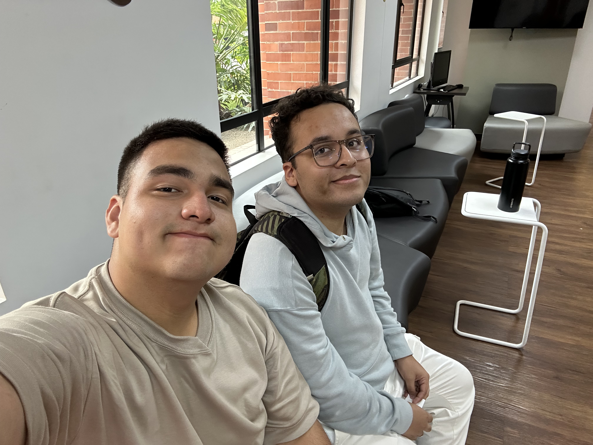
Cada día que hemos pasado siendo novios, cada momento que hemos compartido en este último año ha sido fantástico y espero que para ti también. Te has convertido por completo en una de mis más grandes prioridades y en una de mis personas favoritas en todo el mundo, te pienso y te añoro todos los días.
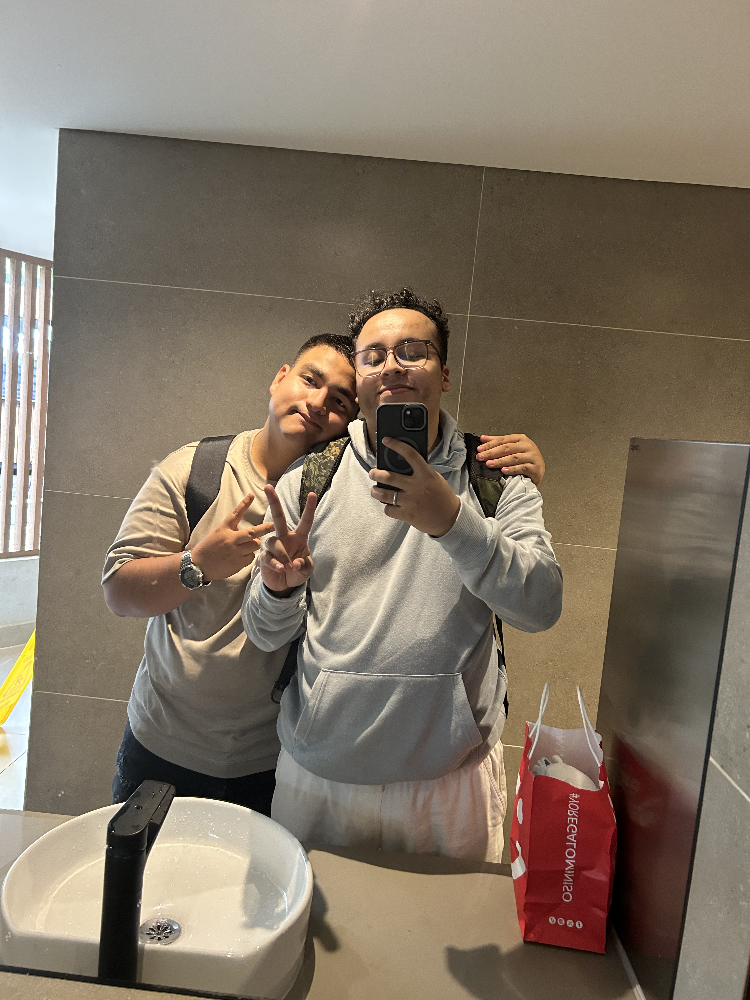
En todo este año que estuvimos juntos me alegra haber sido partícipe de tu vida y estar ahí contigo en momentos importantes para ti, me alegra enormemente haber podido cooperar en tu cumpleaños 19 y darte un regalo que te gustó.
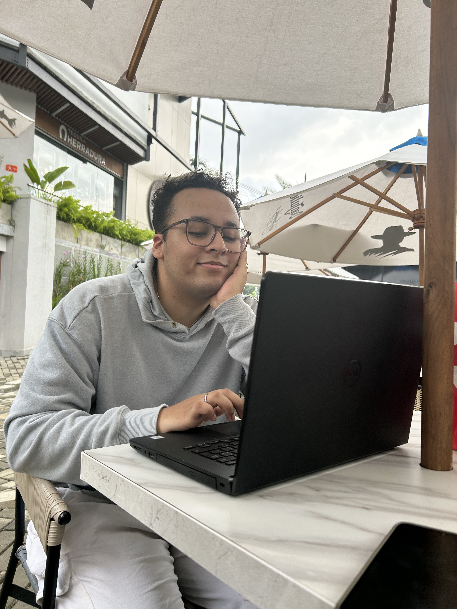
Ese primer regalo fue el primero de muchos que recibirás de mí, porque ver tu cara en esos momentos cuando recibes un regalo, o cuando te he mandado algo de plata aunque no fuera mucha, pero sabía que la necesitarías en ese momento, me hace muy feliz porque sé que tú lo agradeces de corazón y de forma desinteresada y yo te la doy con todo mi amor y cariño.
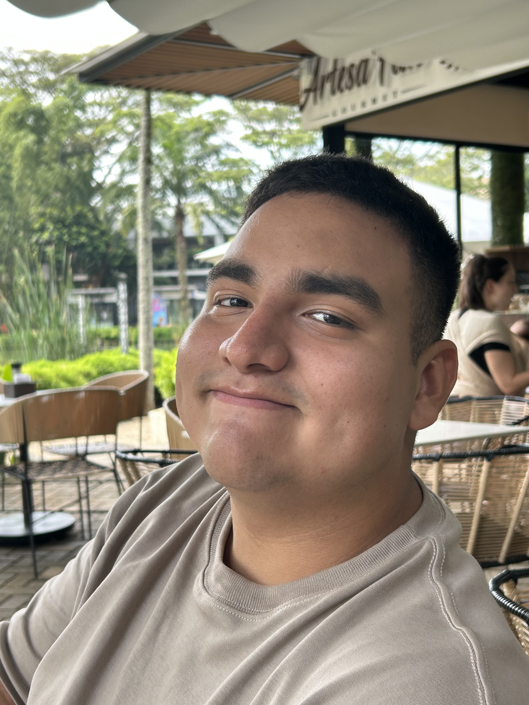
Nuestra primera navidad fue muy especial para nosotros y también algo difícil porque yo trabajaba hasta muy tarde y eso hizo que habláramos menos, pero todo eso valió la pena cuando pude ir a visitarte a Cali.
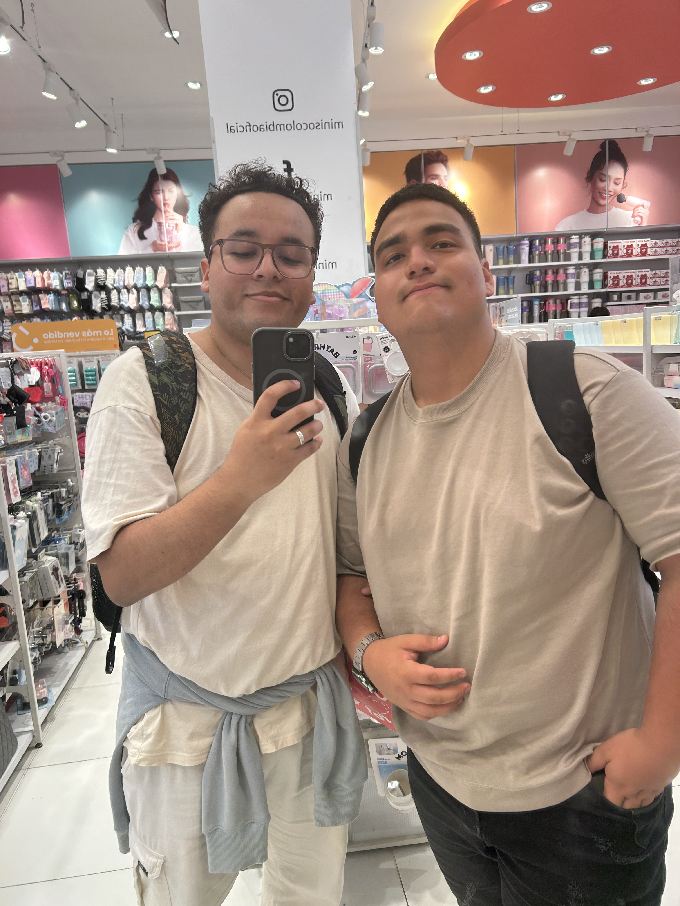
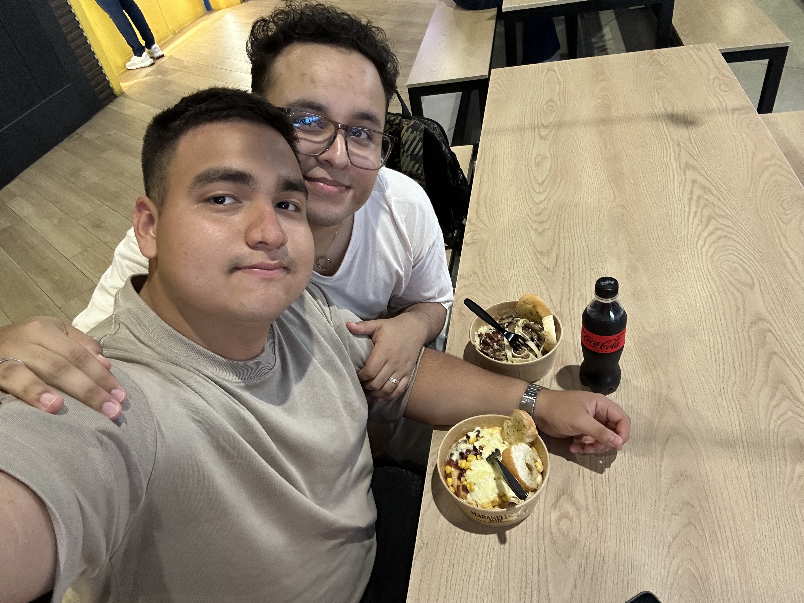
Esos dos días que estuve contigo han sido los dos días más maravillosos que he tenido. Cuando te vi por primera vez fue algo increíble, me invadió una sensación de felicidad y gozo que nunca antes había tenido; verte por fin en persona, poder abrazarte y besarte fue maravilloso.
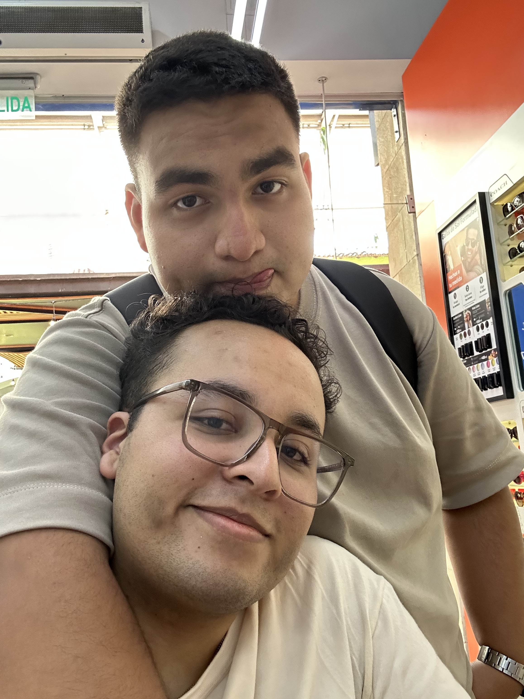
No puedo describir con palabras lo emocionante que fue ese encuentro para mí y poder pasar dos días enteros contigo visitando los centros comerciales, comiendo juntos, besándonos, tomándonos de la mano...
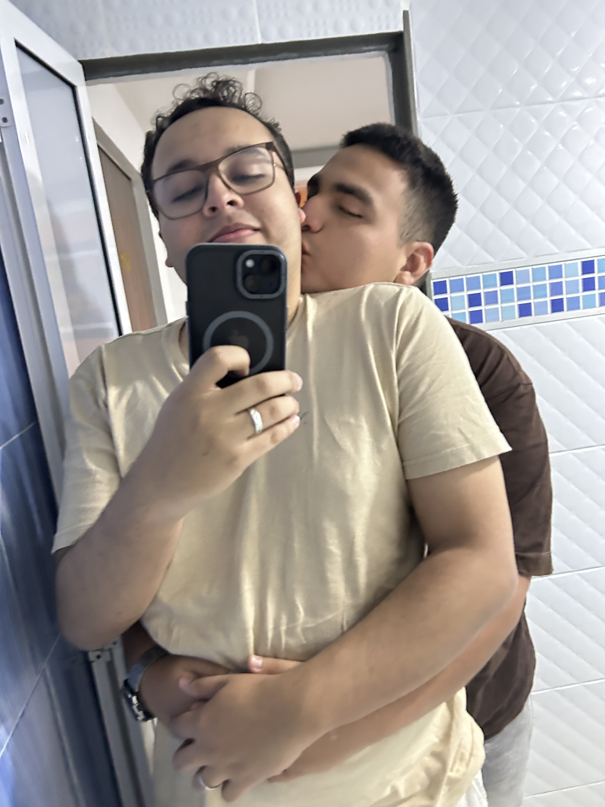
Y claro, no podemos olvidar nuestro momento de amor en el motel en donde tuvimos un gran sexo y nos acurrucamos juntitos y tú te dormiste en mi pecho, nos bañamos juntos y luego fuimos al centro comercial.
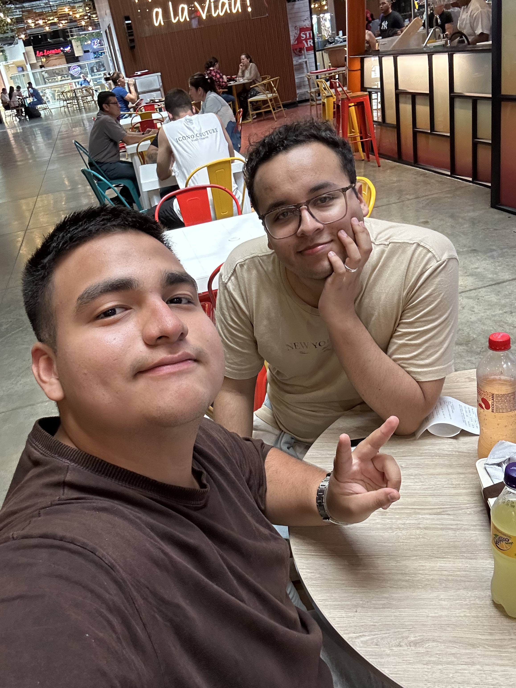
También recuerdo nuestro momento más cine, cuando en nuestro beso final paramos por un momento el tránsito antes de que tú te subieras al auto para ir a tu universidad y yo subiera al mío en dirección al aeropuerto.
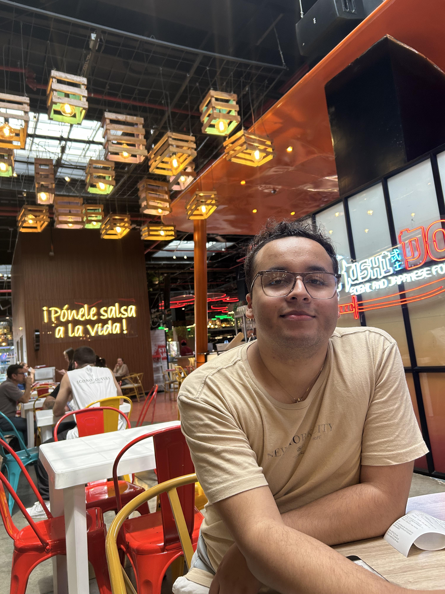
Pasamos por muchas cosas en este año: momentos alegres, tristes, muchas emociones intensas; hemos llorado y reído juntos y cada uno de esos momentos nos han enseñado cosas y han hecho que nuestra relación crezca y se afiance cada vez más. Este año ha sido maravilloso y espero que los años que vienen sean aún más maravillosos y emocionantes.
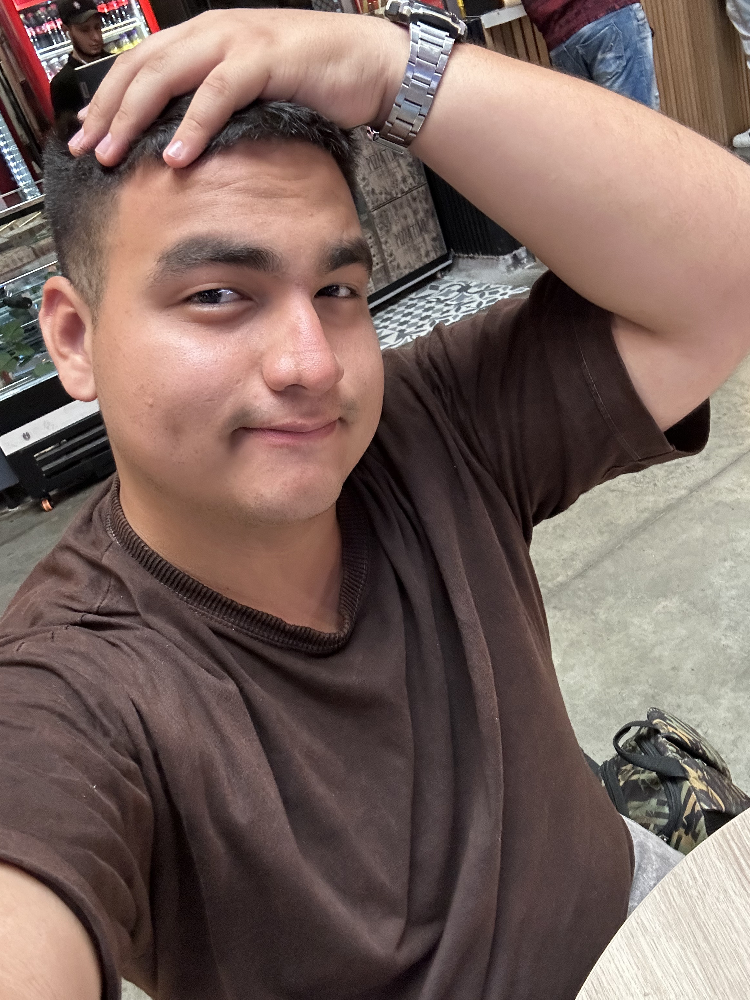
Te lo he dicho muchas veces, pero siempre te lo diré más y más: Te amuuuuuuuuuuuuuuuu mi vida, eres lo más valioso para mí, eres mi familia ahora y no te cambiaría por nadie ni por nada.
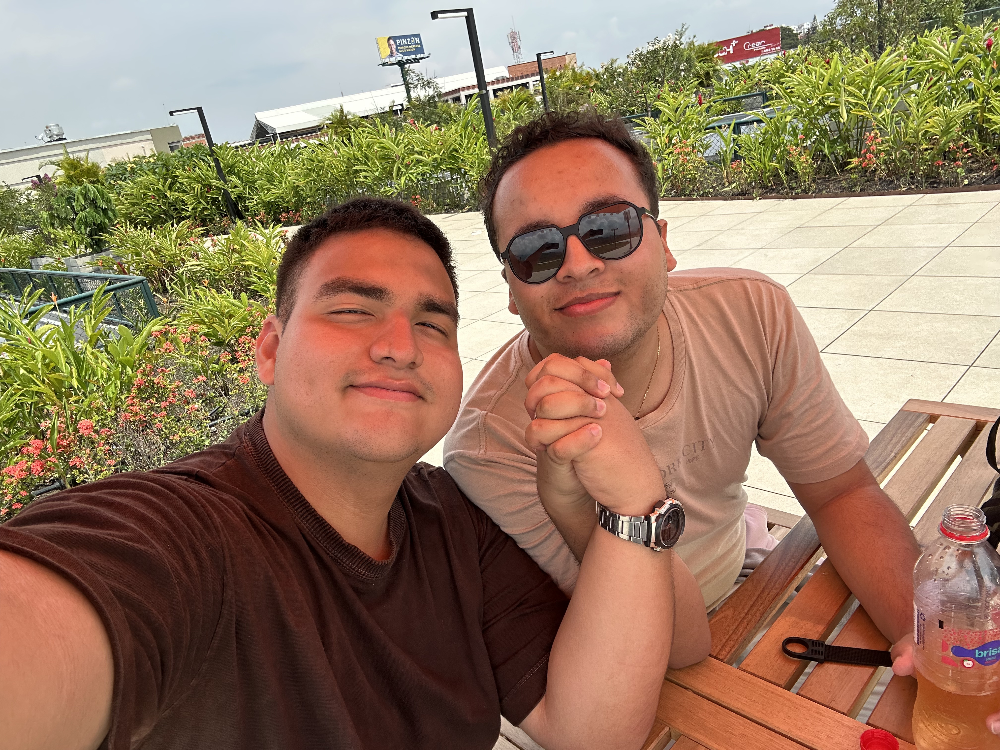
¡Feliz aniversario mi hermoso, maravilloso y fantástico Novio! ❤️